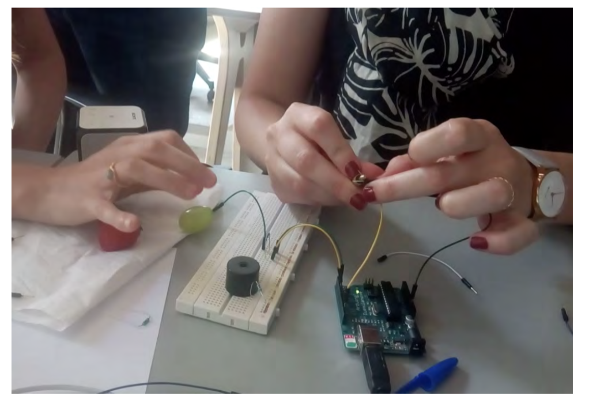
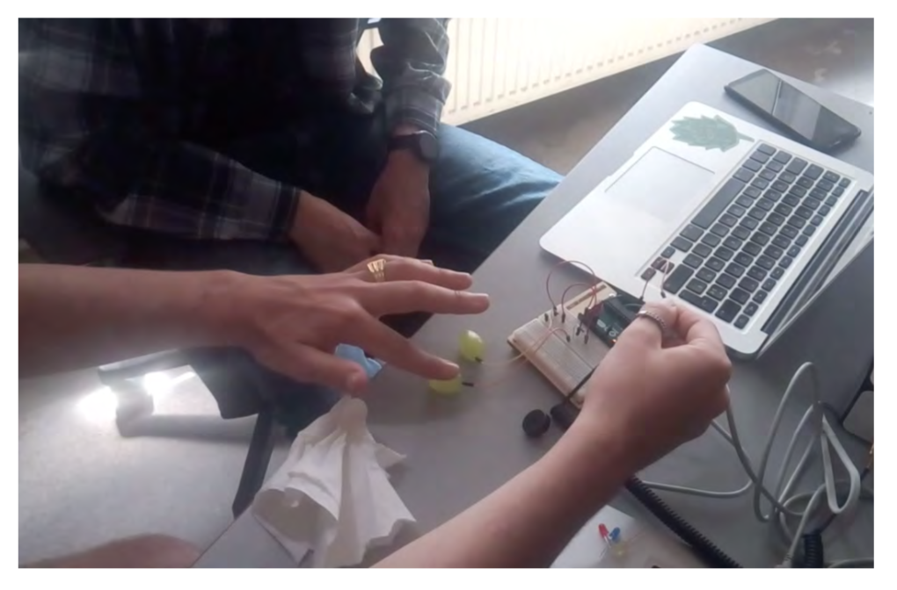
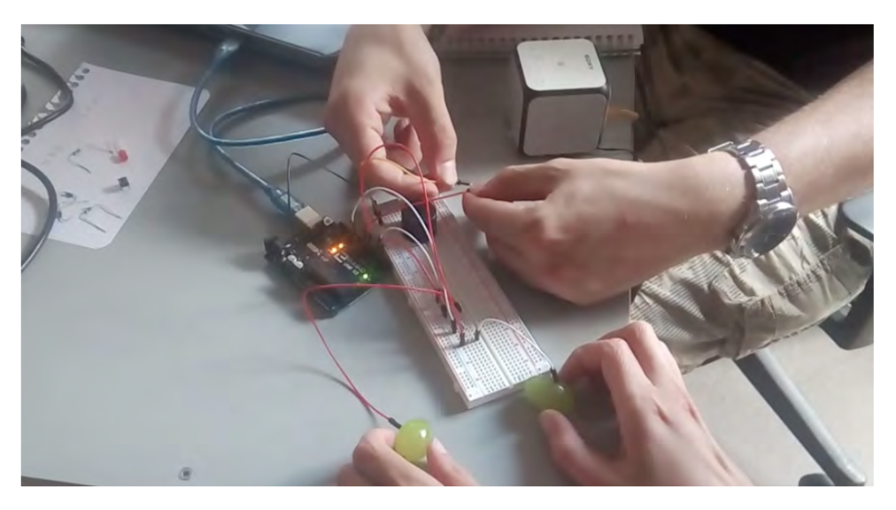

WORKSHOP
Arduino & musical instruments with fruits

Workshop developed within a computer programming and coding course for adult learners at BeCode.
Using Arduino, participants created simple musical instruments with fruit such as strawberries and grapes. Through electrical circuits and computer code, touch and conductivity were transformed into sound.
Arduino is an open-source prototyping platform used to create interactive electronic objects through hardware and code.


